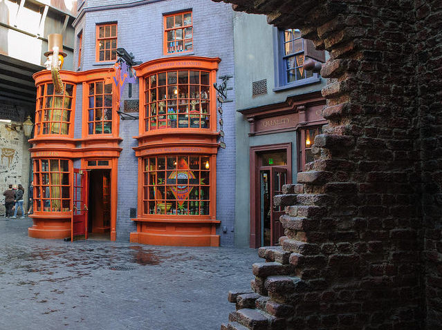
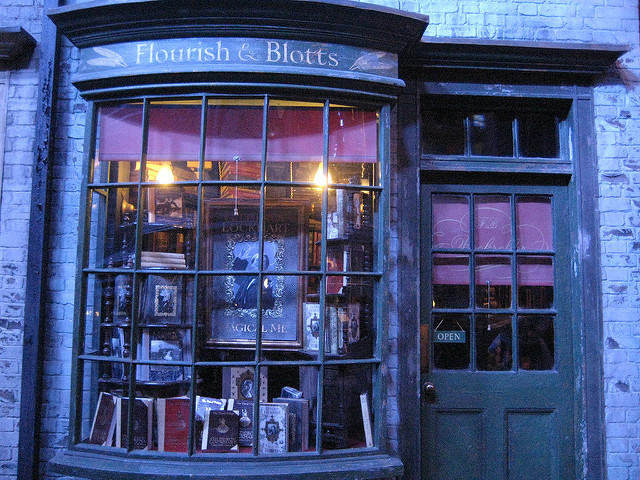
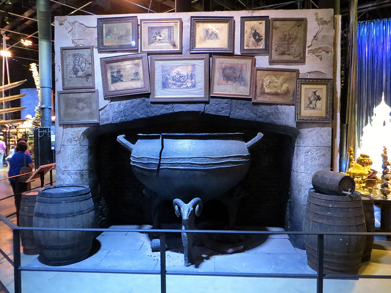
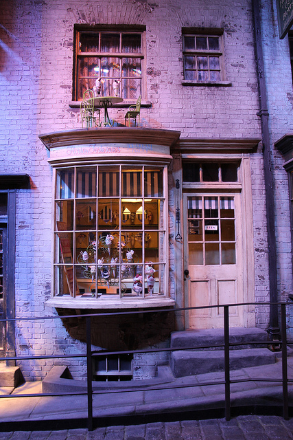

Diagon Alley
Welcome to Diagon Alley! This cobblestoned wizarding alley is one of the most popular shopping destinations in London. Located behind the Leaky Cauldron pub you can find restaurants, shops, and many other sights. Just make sure you know which bricks to tap!
Flourish & Blotts Bookseller is a bookshop located in North Side, Diagon Alley. Shelves are stacked to the ceiling with books as large as paving stones and as small as postage stamps. Stop by to pick up such volumes as The Monster Book of Monsters or The Life and Lies of Albus Dumbledore.
Food & Drink
On your way in to Diagon Alley stop by this popular wizarding pub. Recommended are the pea soup (known to eat people but hasn't in some time) and the exploding lemonade!
After a meal at the Leaky, why not stop for some dessert at Florean Fortescue's Ice Cream Parlour? The Parlour is a small shop with places to sit down inside and a small outside area as well. Check out all the colorful ice cream and maybe order a chocolate-raspberry with chopped nuts!